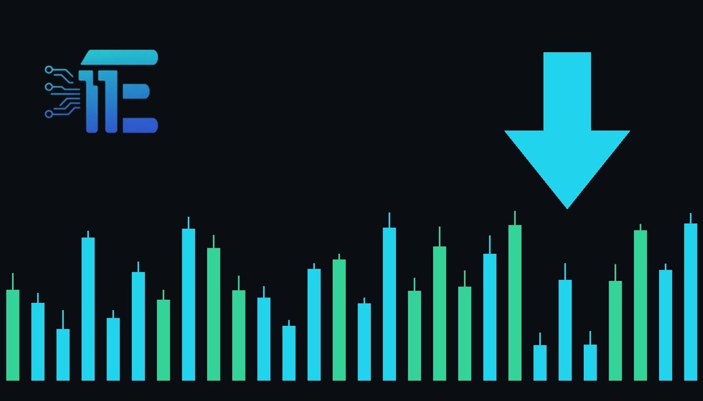

Job Openings Surge Past Expectations in Positive Labor Market Signទិន្នន័យការងារសហរដ្ឋអាមេរិកកើនឡើងខ្ពស់ជាងការព្យាករ
XAU/USD impact: ▼ Bearishផលប៉ះពាល់លើ XAU/USD: ▼ ធ្លាក់

US job openings rose to 7.52 million in September, exceeding forecasts ahead of the upcoming payrolls report. This labor market strength shapes broader rate expectations and influences gold pricing dynamics.
ទីតាំងការងារថ្មីនៅសហរដ្ឋអាមេរិកបានកើនឡើងដល់ 7.52 លានក្នុងខែកញ្ញា ដែលលើសពីការព្យាករមុនរបាយការណ៍ការងារសំខាន់ៗ។ កម្លាំងពលកម្មនេះជះឥទ្ធិពលដល់ការរំពឹងទុកអត្រាការប្រាក់ និងតម្លៃមាស។
The Bureau of Labor Statistics reported that US job openings reached 7.52 million in September, representing an increase of 333,000 from August. This figure came in well above the Dow Jones consensus outlook, which had anticipated job openings of 7.15 million.
ការិយាល័យស្ថិតិការងារបានរាយការណ៍ថា 7.52 លាននៅក្នុងខែកញ្ញា ដែលកើនឡើង 333,000 ពីខែសីហា។ , តួលេខនេះគឺខ្ពស់ជាងការរំពឹងទុករបស់ទីផ្សារដែលបានព្យាករត្រឹម 7.15 លាន។
This labor market data serves as a key transmission channel for XAU/USD. Stronger employment indicators typically influence expectations regarding Federal Reserve monetary policy, which in turn affects the US dollar and real yields. Higher job openings suggest continued economic resilience, impacting safe-haven demand and inflation hedging considerations for market participants.
ទិន្នន័យទីផ្សារការងារនេះគឺជាកត្តាបញ្ជូនសំខាន់សម្រាប់ XAU/USD។ Fed ដែលជះឥទ្ធិពលដល់ដុល្លារអាមេរិក និងអត្រាការប្រាក់ពិតប្រាកដ។
A balanced view of the situation indicates that robust economic data can pressure gold prices if it sustains higher interest rate expectations and strengthens the US dollar. Conversely, any subsequent softening in labor metrics or economic uncertainty would typically support gold through increased safe-haven demand and shifting rate outlooks.
ទស្សនៈមានតុល្យភាពបង្ហាញថា ទិន្នន័យសេដ្ឋកិច្ចដ៏រឹងមាំអាចដាក់សម្ពាធលើតម្លៃមាសប្រសិនបើវាគាំទ្រអត្រាការប្រាក់ខ្ពស់ និងពង្រឹងដុល្លារអាមេរិក។ ផ្ទុយទៅវិញ ការទន់ខ្សោយណាមួយនៅក្នុងទិន្នន័យការងារនឹងគាំទ្រដល់មាសតាមរយៈតម្រូវការសុវត្ថិភាព។
Traders monitoring XAU/USD should watch upcoming employment releases, including the broader payrolls report, as well as subsequent comments from Fed officials regarding interest rate trajectories and economic growth.
អ្នកជួញដូរគួរតែតាមដានរបាយការណ៍ការងារបន្ទាប់ និងសេចក្តីថ្លែងការណ៍របស់ Fed ពាក់ព័ន្ធនឹងទិសដៅអត្រាការប្រាក់ និងកំណើនសេដ្ឋកិច្ច។
Key takeawaysចំណុចសំខាន់ៗ
- September job openings rose to 7.52 million, beating expectations.
- ទីតាំងការងារខែកញ្ញាកើនឡើងដល់ 7.52 លាន កហស់លើសការព្យាករ។
- Strong labor data influences Fed rate expectations and the US dollar.
- ទិន្នន័យការងាររឹងមាំជះឥទ្ធិពលដល់ការរំពឹងទុកអត្រាការប្រាក់របស់ Fed និងដុល្លារអាមេរិក។
- Traders should monitor upcoming employment reports and central bank communications.
- អ្នកជួញដូរគួរតែតាមដានរបាយការណ៍ការងារនិងការប្រកាសពីធនាគារកណ្តាលបន្តទៀត។
Original commentary by THE MARKET CODE, based on public reporting from Economy. Written with the help of AI. Educational only, not financial advice.
មតិវិភាគដើមដោយ THE MARKET CODE ផ្អែកលើការរាយការណ៍សាធារណៈពី Economy។ សរសេរដោយមានជំនួយពី AI។ មាតិកាអប់រំប៉ុណ្ណោះ មិនមែនជាដំបូន្មានហិរញ្ញវត្ថុទេ។